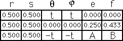
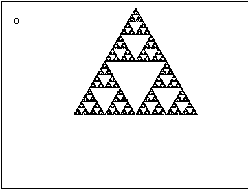

| Here we spin the lower left corner CCW and the lower right corner CW in 10° steps. |
| To maintain the symmetry of the left and right corners, we translate the
left corner by |
| What do you notice about the motion of the three subpieces of the lower corners? |
|  |  |